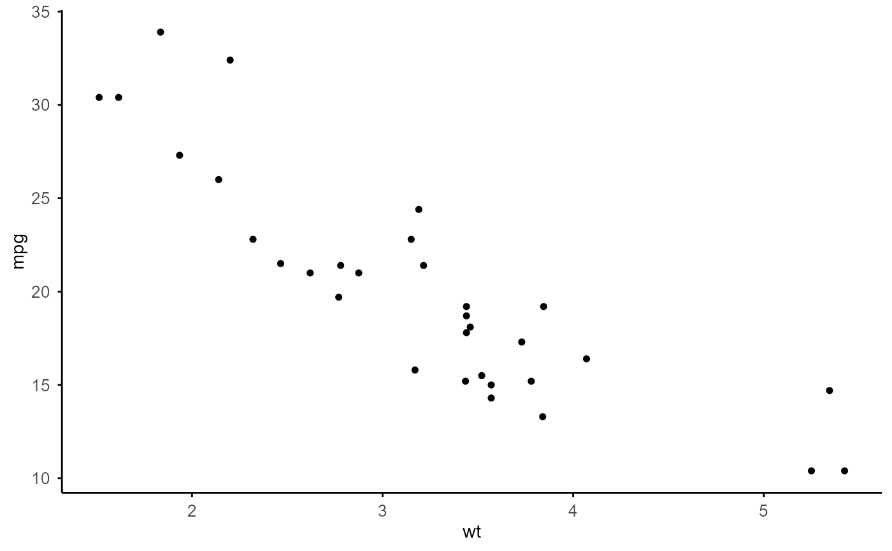

A minimal theme used by all TiDEomics plotting functions, built on
theme_minimal(). Exported so users can apply it to their own plots
for consistent styling.
Examples
library(ggplot2)
#> Warning: package 'ggplot2' was built under R version 4.6.1
ggplot(mtcars, aes(wt, mpg)) +
geom_point() +
theme_custom(base_size = 10)
